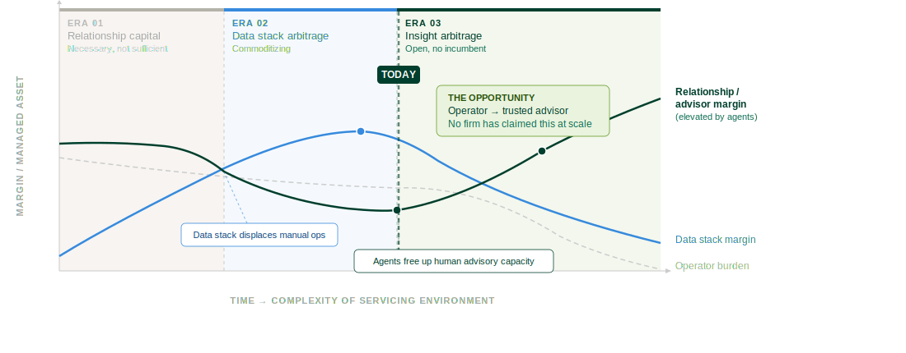

Rebuilding Asset Management for the Agentic Era
A strategic approach to building the activation layer between data infrastructure and business outcomes, enabling a new execution model built on prototype-first discovery, decision-centric design, workflow activation, and trusted adoption.
Local market knowledge, broker networks, client trust. The manager who knew the asset, the landlord, the submarket, the LP: they won the mandate and kept it.
This did not go away. It became the prerequisite. Relationships without the intelligence to back them up no longer close institutional mandates. Relationships with it become irreplaceable.
Argus, Yardi, MRI, VTS, Anaplan. The manager running the cleanest stack could service more AuM per analyst. Real differentiation, for a period.
Every institutional manager now runs the same platforms. Configuration parity is hygiene. The time saved by not doing manual data work went into more manual data work at a higher level.
Agents handle the operational layer: monitoring, flagging, reconciling, surfacing. The analyst stops being an operator. The time spent on data becomes time spent on judgment.
The asset manager who was 60% operator and 40% advisor inverts. They arrive at every client conversation having already seen everything the data can show. What they bring is interpretation, conviction, and trust.
That cannot be automated. It can only be elevated.

| Today | Must become | |
|---|---|---|
| Audit-ready data: traceable, complete, defensible to a regulator | → | Agent-ready data: structured for inference, grounded, decision-scoped |
| Data lineage: where did this number come from? | → | Decision lineage: why did the system recommend this action? |
| Definition of data: what a field is called and how it is typed | → | Meaning of data: what a value implies in context, for whom |
A taxonomy feels structured: it has hierarchy, categories, controlled vocabulary. But hierarchy is a tree, and trees are one-dimensional relationships. What an agent needs is a graph: this asset class relates to this risk profile relates to this approval threshold relates to this reporting obligation.
The moment you add a second dimension of relationship, a taxonomy becomes an ontology, and the work required multiplies by an order of magnitude. Organizations that feed a flat taxonomy to an agent will get agents that confidently traverse the wrong paths.
| Today | Must become | |
|---|---|---|
| Classification trees: static, categorical, maintained in Excel or a data dictionary | → | Traversable graph with weighted relationships: machine-readable, queryable, version-controlled |
An ontology tells you what exists and how things relate. But an agent operating in a real organization also needs to know who is involved: who can approve a variance, who needs to be notified when a threshold is crossed, who has authority to override a recommendation.
| Today | Must become | |
|---|---|---|
| Assets, funds, entities: typed and related in a schema | → | People-in-the-loop context diagrams: who touches each entity, when, why, and with what authority |
A policy written for human compliance relies on the reader to exercise judgment at every ambiguous edge case. An agent cannot exercise discretion. It needs a decision tree with explicit branch conditions. Every escalation path must be named. Every override must have an authority.
| Today | Must become | |
|---|---|---|
| Written for human compliance: narrative, interpretable, auditable after the fact | → | Machine-executable decision hierarchies: every branch has a condition, every escalation has a trigger, every outcome is auditable |
A lease is not just a document. It is a set of time-triggered obligations, option windows, co-tenancy conditions, ROFO rights, and rent escalation clauses. Stored as a PDF, it is inert. Abstracted into an obligation graph, it becomes a live system that surfaces what needs to happen and when.
| Today | Must become | |
|---|---|---|
| Stored, searched when a dispute arises, reviewed at renewal | → | Clauses as live rules triggering downstream actions: expiry alerts, approval workflows, reporting obligations |
| Today | Must become | |
|---|---|---|
| ReportsSnapshot in time, consumed and filed. Produced for a reviewer. | → | ReportsLiving signals that trigger action and route to the right decision maker at the right moment |
| KPIsMeasurement of what happened last period: lagging, descriptive, backward-looking | → | KPIsLeading indicators that prompt before failure: forward-looking, actionable, personalized by role |
| Org chartsReporting lines and accountability on paper | → | Org chartsDecision authority maps: who can approve what, at which threshold, in which context |
A process map written for human execution assumes the reader will fill in the gaps. An agent orchestration spec cannot assume anything. Every trigger must be named, every permission must be explicit, every escalation path must be defined before the agent runs.
| Today | Must become | |
|---|---|---|
| Steps documented for human execution: narrative, assumed context, discretion at every edge case | → | Agent orchestration specs: triggers, permissions, escalation paths, and lineage encoded explicitly |
- Capability audit: connect to existing systems, produce a gap map grounded in actual data flows, not stated preferences
- Prototype sprint: working software against real data, not a wireframe or a demo environment
- What we are not doing: no RFP, no vendor selection, no big-bang commitment
- Ontology v1 and integration hub running concurrently
- Artifact re-imagination begins: policies, taxonomies, contracts re-authored for agent operationalizability
- Pilot cohort embedded in live work, not a lab
- Change management tracks running from day one across executives, operators, and legacy IT
- Agent-ready data layer live across managed portfolio
- Outcome engineers embedded in client-facing teams
- The 60/40 inversion measurable: advisors spending more time advising
- VCO stood up and owned internally
- The trusted advisor transition: the operator-to-advisor shift is now measurable
Small Frame the burning platform, not "cool technology" but "cost of not moving." Secure budget for the capability audit and prototype sprint as a learning investment, not a program commitment.
Medium Protect the pilot cohort from being pulled back into BAU. Their time is the program's most scarce resource.
Large Champion the VCO model internally. The ROI is in the operator-to-advisor ratio, not in cost reduction alone.
The pilot cohort should include the person who is curious about the tool and has credibility. Not the loudest critic. The quiet builder.
Medium Pilot cohort embedded in live work, not a lab. Their feedback shapes the artifact re-imagination directly.
The goal is not adoption. It is the moment an asset manager arrives at a client meeting and realizes they already know the answer to the question that will be asked. That is the transition.
The integration hub connects to what exists. It does not replace the Yardi instance, the MRI database, or the Excel models. The person who built the load-bearing Excel becomes an architect, not a casualty.
Legacy IT must be involved from the capability audit onward. Their knowledge of where the data actually lives, what the field names mean, and where the reconciliation breaks happen is irreplaceable.